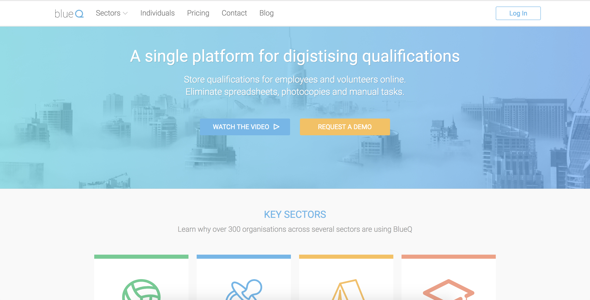

Working against a set of designs given to me by a contracted UI designer, I was tasked with building multiple iterations of Everproof's marketing website. I was responsible for all decisions regarding this project, including the technology implemented.
A key requirement of the project was the ability to update website content instantaneously. I researched tools to assist, and implemented Buddy. Buddy offered continuous deployment, so that changes to the master branch (on Github) were instantly deployed on the Everproof website.
When building the website, I had two important criteria: (a) sales staff could create pages with ease (b) redundant code could be avoided through the use of reusable modules (eg. Navbar) I needed to utilise a static site generator.
Through the use of docs and tutorials, I taught myself how to implement Jekyll. I built templates for various pages - these templates assisted sales staff in creating new content without needing to code.
To ensure the website was to specification across all devices, I used Cross Browser Testing. This service enabled me to fix browser-specific bugs that occured (mostly with Internet Explorer!).
I researched the best techniques for search engine optimisation, and correctly formatted the META tags and website content. I also harnessed the power of Google Insights to best optimise the website.
